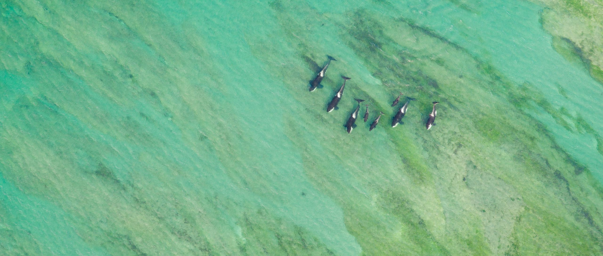
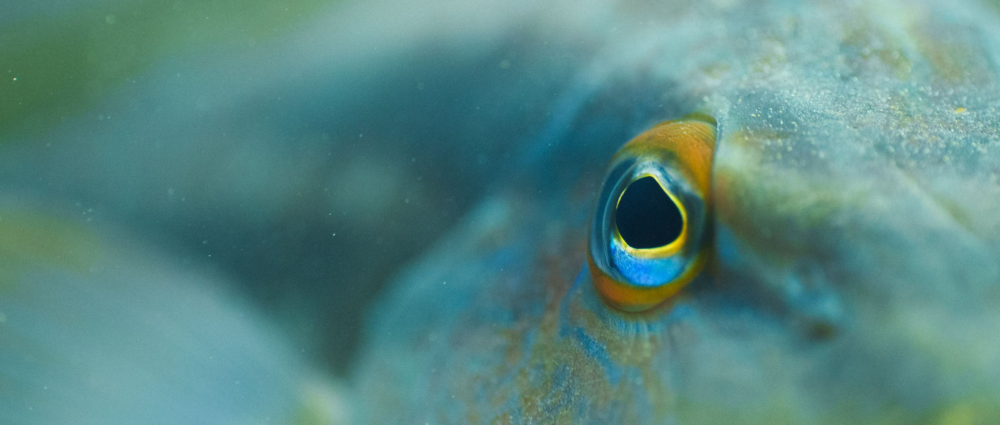

Plataforma de ciencia ciudadana y conocimiento colaborativo
A platform for citizen science and collaborative knowledge
Orca Explorer
Ir a la plataforma
Go to the platform

Quiénes somos
Who we are
Lyra Wildlife es una asociación civil argentina sin fines de lucro, con personería jurídica otorgada por la Inspección General de Justicia. Trabajamos en la conservación de la fauna silvestre y de los ambientes que la sostienen, con foco en el Atlántico Sur y proyección al resto del mundo.
Lyra Wildlife is an Argentine non-profit civil association, granted legal status by the Inspección General de Justicia. We work on the conservation of wildlife and the habitats that sustain it, with a focus on the South Atlantic and a reach that extends beyond it.
Desarrollamos plataformas de ciencia ciudadana, producimos contenidos audiovisuales de divulgación y mantenemos abierto el conocimiento que construye su comunidad, para que investigadores, organizaciones y personas interesadas puedan usarlo.
We build citizen science platforms, produce documentary work, and keep open the knowledge their communities build, so that researchers, organisations and the public can use it.
Misión
Mission
Plataformas donde cualquier persona puede aportar sus observaciones de campo con un método claro, y donde es la propia comunidad la que las revisa entre pares antes de integrarlas.
Platforms where anyone can contribute field observations under a clear method, and where the community itself reviews them, peer to peer, before they enter the record.
Catálogos estructurados de individuos y avistamientos, documentados y disponibles para la comunidad científica y para el público.
Structured catalogues of individuals and sightings, documented and available to the scientific community and to the public.
Cine documental y fotografía de naturaleza para dar contexto a los datos y acercar a más gente al trabajo de campo.
Documentary film and nature photography that give context to the data and bring more people closer to field work.
Nuestros programas
Our programmes


Información institucional
Legal information
Comisión Directiva (2026 a 2029)
Presidente: Kevin Zaouali
Secretaria: Milena Fracchia
Tesorera: María Helena Manfredi
Board of Directors (2026 to 2029)
President: Kevin Zaouali
Secretary: Milena Fracchia
Treasurer: María Helena Manfredi
Órgano de fiscalización
Revisora titular: María Paula Fernández
Revisor suplente: José Antonio Nicolás Amuchástegui
Audit Committee
Auditor: María Paula Fernández
Alternate auditor: José Antonio Nicolás Amuchástegui
Contacto
Contact
Para consultas sobre nuestros programas, colaboraciones con instituciones de investigación o uso de nuestros datos.
For questions about our programmes, collaborations with research institutions, or use of our data.